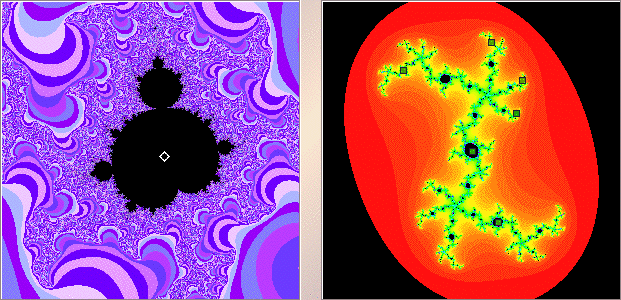

|  |
| The left window shows a magnification of a midget Mandelbrot set. The white diamond indicates we have selected a point in the cardioid of this midget Mandelbrot set. |
| In the right window, shift-click or right click near |
| We obtain a |
| Note this midget Mandelbrot set is on the antenna above a |
Return to Samples.